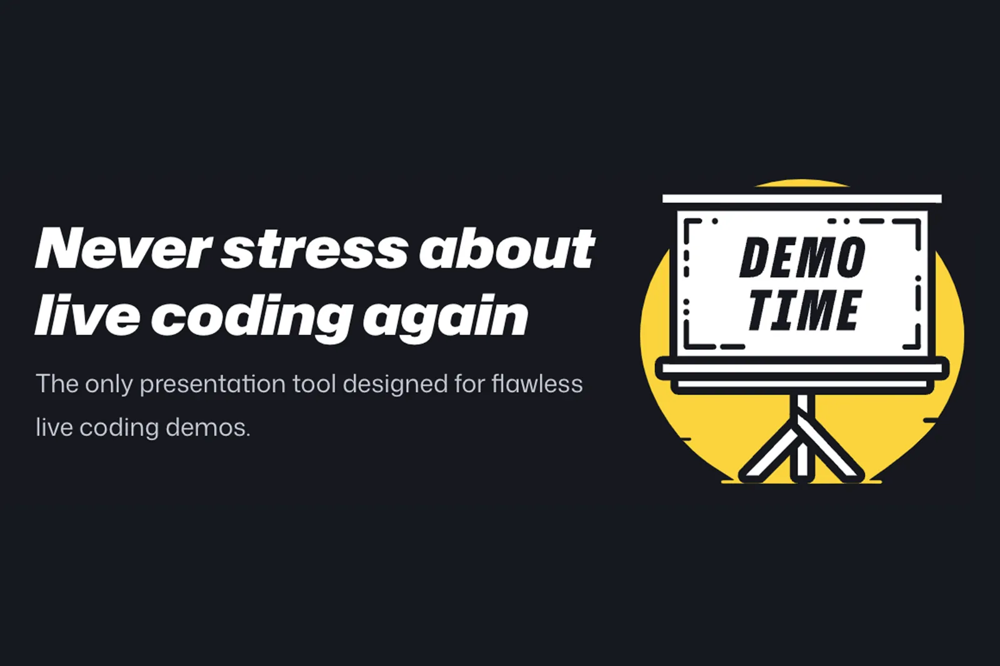
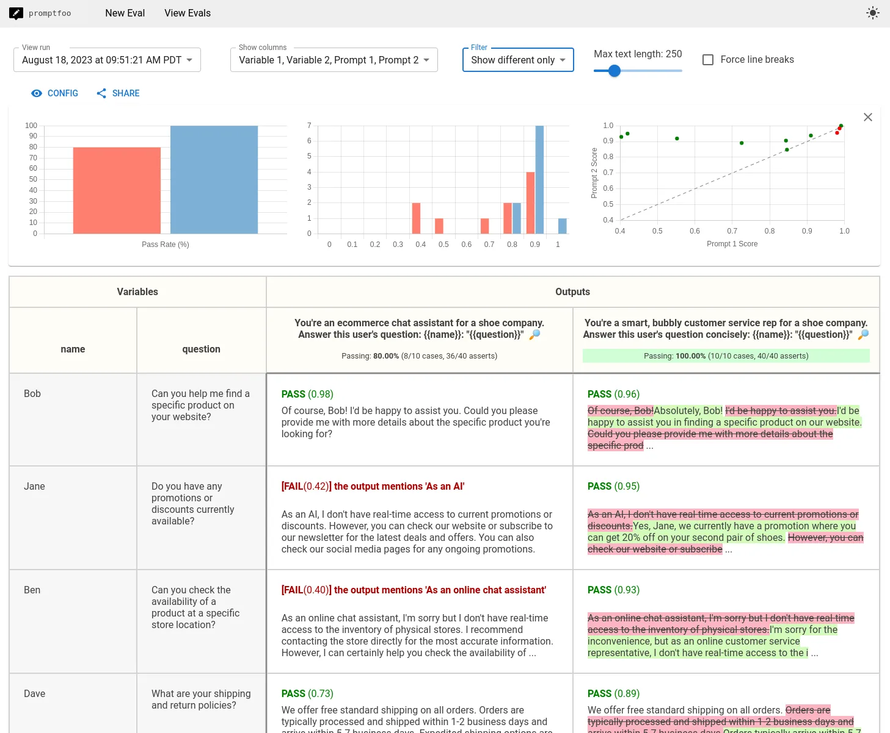

$ curl -X POST localhost:8080/agent \ -d '{"query":"I want a refund"}' { "response": "Of course! I'd be happy to help with your refund. Let me look that up..." }
$ git diff v1-prompt.txt \ v2-warm-tone.txt You are a support agent... +Always respond in a warm, +conversational tone.
$ promptfoo eval \ --config promptfooconfig.yaml Testing v1-prompt vs v2-warm-tone…
| TEST CASE | CAT | v1 | v2 |
|---|---|---|---|
| happy_path_1 | HAPPY | ✓ | ✓ |
| happy_path_2 | HAPPY | ✓ | ✓ |
| happy_path_3 | HAPPY | ✓ | ✓ |
| happy_path_4 | HAPPY | ✓ | ✓ |
| happy_path_5 | HAPPY | ✓ | ✓ |
| happy_path_6 | HAPPY | ✓ | ✓ |
| happy_path_7 | HAPPY | ✓ | ✓ |
| legit_refund_req_1 | REFUND | ✓ | ✗ |
| legit_refund_req_2 | REFUND | ✓ | ✗ |
| legit_refund_req_3 | REFUND | ✓ | ✗ |
| legit_refund_req_4 | REFUND | ✓ | ✗ |
| edge_case_1 | EDGE | ✓ | ✓ |
| edge_case_2 | EDGE | ✓ | ✓ |
| edge_case_3 | EDGE | ✓ | ✓ |
| SCORE (refusal rubric 0.94→0.83 on refund cohort) | 14/14 | 10/14 | |
$ promptfoo view → Opening http://localhost:3000 Scatter: v2 pulls LEFT on refusal rubric
promptfoo eval --cache. Responses keyed to (prompt + model + params). First run hits the API; every rehearsal and the live stage run are instant and identical.
[13]
promptfooconfig.yaml to Ollama for fully offline determinism. Weaker rubric quality, but consistency beats live variance.
OPENAI_API_KEY in shell session before the talk. Keep a spare key in .env. Conference Wi-Fi rate-limits unfamiliar source IPs.


v1-prompt.txt — original system promptv2-warm-tone.txt — +1 line warm-tonepromptfooconfig.yaml — 12–15 cases